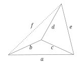
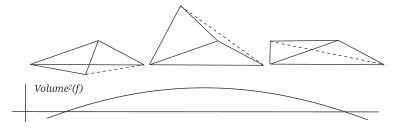
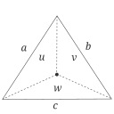
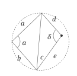
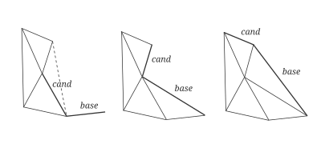

The Delaunay triangulation is defined by the property that no point is inside the circumcircle of any triangle.
In the last post of this multi-part series, I introduced the concept of distance geometry processing and mentioned a few of its benefits. I wanted to start with a simple example to get readers comfortable with a coordinate-free perspective on geometry processing algorithms, but in this article we'll dive deeper and really start to reap some of the benefits.
In this post I formulate a coordinate-free Delaunay triangulation algorithm, starting from a set of points and their Euclidean distance matrix (EDM).
Before getting into the weeds of the algorithm, we first need the coordinate-free versions of two classic geometric predicates: the point-in-circumcircle (or "incircle") predicate, and the "orient" predicate. Sure, both can be done by using the points' coordinates, but in the spirit of the last article it would be cleaner if we could do this in a single formula involving only the point distances.
The "orient" predicate calculates whether a triangle is flipped or not. Because of the Orientation Problem, we can't know this for a triangle in isolation; however, we can try to figure out something related: whether a triangle is flipped with respect to another neighboring reference triangle.
We do this by calculating the barycentric coordinates (u : v : w) of the query point with respect to the reference triangle. If we assume P is inside the triangle, then the barycentric coordinates can be computed by dividing the area of each subtriangle by the total area of the triangle (where the triangle areas can be computed with Heron's formula). If P is outside the triangle, however, then the Orientation Problem becomes an issue: some of the sub-triangles would be "flipped", meaning their area should be negative.
Instead we take a different approach, exploiting some quirks of the formula for the distance between two points in barycentric coordinates. If we define the displacement vector from point to point in barycentric coordinates by
then the distance between the points, or the length of the displacement vector can be given by
Using this formula, the barycentrics of a point can be found by solving the equation
where , , and are the distances from the triangle's points to the query point
Inverting this matrix and multiplying the result with the right hand side of the above yields
where
and is the determinant of the adjugate matrix, defined by
Pretty neat, right? I think that is always since I've never seen it negative, although the proof is TBD (and maybe you very well could construct cases where it is negative). So — very tentatively — the final predicate for testing the orientation of a query point with respect to the (arbitrarily chosen) edge would be
Here is an alternate derivation of the orientation predicate, using a different approach than the one above. It tests which side of an edge a point lies on by "folding" the quadrilateral into a tetrahedron. I'll leave it here since I think it's a somewhat interesting result:
Before designing a coordinate-free formula that can calculate this, we need to understand the problem in 3D. Imagine folding a quadrilateral along one of its diagonals such that two triangles are formed, and consider the area of the tetrahedron formed by their hull.

The volume (squared) of the above tetrahedron can be computed using its Cayley-Menger determinant:
Imagine fixing the edge lengths a, b, c, d, and e, while letting f be free. Let the quadrilateral be unfolded at first, such that the volume of the tetrahedron is zero. As f decreases, the quadrilateral starts to fold and V increases; V reaches a maximum when the two triangles form a right angle. As f continues to decrease, the quadrilateral folds even more and V starts to decrease as well, until V finally reaches zero. It is interesting to note that the determinant is still continuous at this point (and its initial point): as f decreases further, the lengths form an invalid tetrahedron and the determinant becomes negative.

In the planar case the volume is zero, so f sits at one of the two ends of this range: the larger one if the two triangles lie on opposite sides of c (a convex quadrilateral), and the smaller one if they lie on the same side. The two cases are told apart by the sign of the determinant's derivative with respect to f2, which is negative in the first case and positive in the second. Furthermore, this derivative is linear in f2 and has a surprisingly simple formula (up to a positive factor of 2), giving us our final predicate:
This is negative when P and C lie on opposite sides of the edge AB.
Here is a third derivation, which gets to the same place using only vector identities.
Take the triangle ABC and the triangle ABP that shares its edge AB, and let
If everything lies in a plane, these normals are parallel, and they point in the same direction exactly when C and P are on the same side of AB. So the sign of their dot product is the orientation predicate we want, and it is negative when C and P are on opposite sides. The dot product of two cross products can be expanded with the Binet–Cauchy identity,
which has no cross products or coordinates left, only dot products. Each of these is a dot product of two edges that start at the same point, so the law of cosines turns it into distances, using :
Here a, b, c, d, e, and f are the same distances as before. Substituting, we get
and the bracketed expression is exactly the orient predicate from the previous section, up to a factor of 4. Since only dot products of vectors from A appear, the identity holds in any dimension, so the same formula gives the signed product of the two triangles' areas even when P is not coplanar with ABC.
This also explains the structure of the first derivation. Since and are twice the areas of their triangles, the predicate is 16 times the product of the two areas, with a sign. Setting P = C (so d = b, e = a, f = 0) gives , which is exactly from before. So is sixteen times the squared area of the triangle, which settles that it is always positive for a non-degenerate triangle.
The core of this predicate relies on the concept of the "power of a point" in Euclidean triangle geometry. This is defined for a point P with respect to a circle with origin O and radius r as
Clearly, this is negative when P is inside the circle and positive when P is outside. In the case when the circle is the circumcircle of a triangle, the power of a point has a very clean formula in terms of the point's barycentric coordinates:

Computing predicate becomes trivial using the barycentric coordinate formulae from the last section.
The predicate above takes six distances, but sometimes only the five edge lengths a, b, c, d, and e are known. One option is to "flatten" the quadrilateral by calculating the diagonal f using flip_d2 from the previous post and feeding it to the planar predicate. It turns out that a more direct formula exists which doesn't need f at all.
Let be the angle between edges a and b, and be the angle between edges d and e. Both are opposite the shared edge c. By the inscribed angle theorem, the query point is inside the circumcircle exactly when . Since both angles are between and and cosine is decreasing there, this is the same as . The law of cosines gives each cosine in terms of the edge lengths,

so, multiplying through by the positive quantity , our final predicate becomes
It is important to note that — unlike the planar predicate — the order of the points now does matter: the query point must be across from edge c.
This formula contains the products ab and de, which are square roots of and . These can be avoided as well. Let and , so that the predicate is . When and have opposite signs, the two terms have opposite signs too, so the predicate is decided by whichever has the larger magnitude, which can be compared after squaring. With
the predicate becomes
This only involves polynomials in the squared edge lengths.
To prove I'm not talking out of my ass I made shadertoy showing both predicates here. Check it out!
The idea behind my triangulation algorithm is to pick a point and grow a triangulation from it, one point at a time. At each iteration we add the closest point to the growing cluster, producing a Delaunay triangulation of the convex hull of the new cluster.
Before continuing to the algorithm, I strongly recommend reading at least sections 5 and 6 (if not all) of Guibas and Stolfi's classic paper — hereby referred to as the G&S paper — from where I borrow some basic topological operations, and from which my algorithm is inspired. It's one of the best-illustrated papers I've ever read, and worth reading for the hand-drawn '80s aesthetic alone. The paper's presentation of a functional calculus for topological operations is also very slick.
// Given the following points:
// i ____ l
// / \ /
// / \ /
// /_____\/
// k j
//
// this function returns the following distances:
// __d__
// / \ /
// a c e
// /__b__\/
// and f as the long diagonal
auto quad_d2s(
const point_id i, const point_id j,
const point_id k, const point_id l)
{
return std::make_tuple(
d2(k, i), d2(j, k), d2(i, j),
d2(i, l), d2(j, l), d2(k, l));
}
double bary_denorm(
const double a2, const double b2, const double c2,
const double d2, const double e2, const double f2)
{
return -c2*c2 + a2*c2 + b2*c2 - 2.*c2*f2 - (b2-c2-a2)*d2 - (a2-c2-b2)*e2;
}
// Returns whether l is across edge ij from k.
bool orient(
const point_id i, const point_id j,
const point_id k, const point_id l)
{
const auto [a2, b2, c2, d2, e2, f2] = quad_d2s(i, j, k, l);
// a and b are swapped here to match the triangle labeling of bary_denorm
return bary_denorm(b2, a2, c2, d2, e2, f2) < 0;
}
// Returns whether l is inside the circumcircle of triangle kij.
// As in the formulation above, l must be across edge ij from k.
bool in_circle(
const point_id i, const point_id j,
const point_id k, const point_id l)
{
const auto [a2, b2, c2, d2, e2, f2] = quad_d2s(i, j, k, l);
const double x = d2 + e2 - c2;
const double y = a2 + b2 - c2;
if (x >= 0. && y >= 0.) return false;
if (x <= 0. && y <= 0.) return true;
const double diff = a2*b2*x*x - d2*e2*y*y;
return (x < 0.) ? diff > 0. : diff < 0.;
}
// i ____ l
// / \ /
// / \ /
// /_____\/
// k j
// Returns whether quadrilateral kilj is folded along ij.
template<bool o>
bool unfolded_along(const hedge_id ij)
{
const hedge_id ik = oprev<o>(ij);
const hedge_id il = onext<o>(ij);
return orient(
org(ij), dest(ij),
dest(ik), dest(il));
}
template<bool o>
void stitch_from(const hedge_id base_begin)
{
// Return if first edge in triangulation
if (onext<o>(base_begin) == base_begin)
{
return;
}
hedge_id base = base_begin;
while (true)
{
hedge_id cand = onext<o>(base);
if (unfolded_along<o>(base))
{
// The triangle is (org(base), dest(base), dest(cand));
// the query point is across the shared edge cand.
while(in_circle(
org(base), dest(cand),
dest(base), dest(onext<o>(cand))))
{
const hedge_id t = onext<o>(cand);
delete_edge<o>(cand);
cand = t;
}
}
if (!unfolded_along<o>(base))
{
break;
}
base = connect<o>(cand, base);
}
}
If you've read the G&S paper, you might recognize stitch_from as a cluster-point version of the cluster-cluster stitching procedure. Starting from an edge base connecting the cluster to the new point P, it adds triangles along the cluster's boundary connecting to P until the boundary is no longer visible from P — when the first fold occurs.

Some of the algorithms above have the mesh's orientation as a template parameter. When the orientation is flipped (o is true), the half-edge functions act as if the mesh is inside out — left becomes right and right becomes left. Specifically, functions like lnext and onext behave like rnext and oprev. This allows stitch_from to work in both directions.
void triangulate()
{
constexpr double inf =
std::numeric_limits<double>::infinity();
assert(points_size() >= 3);
auto added = std::vector<bool>(points_size(), false);
auto closest_d2 = std::vector<double>(points_size(), inf);
auto closest = std::vector<optional_point_id>(
points_size(), optional_point_id::invalid
);
// Add the first point and initialize the distances
// from each point to this point.
{
const point_id i = point_id(0);
for (const point_id j : d2.adjacent(i))
{
closest_d2[j] = d2(i, j);
closest[j] = i;
}
added[i] = true;
}
point_id i = argmin(closest_d2);
while (closest[i].is_valid())
{
const point_id j = closest[i].as_valid();
const hedge_id base = make_edge();
org(base) = j;
dest(base) = i;
// Add stitches in one direction, then the other.
stitch_from<true>(base);
stitch_from<false>(base);
// For each point that hasn't yet been added, if the
// newly added point is closer then update its
// closest point.
for (const point_id j : d2.adjacent(i))
{
if (added[j])
{
continue;
}
const double d2_ij = d2(i, j);
if (d2_ij < closest_d2[j])
{
closest_d2[j] = d2_ij;
closest[j] = i;
}
}
closest_d2[i] = inf;
closest[i] = optional_point_id::invalid;
added[i] = true;
i = argmin(closest_d2);
}
}
Unlike Guibas and Stolfi's algorithm, this algorithm stitches in points from the middle-out instead of from side-to-side. This way we can skip the G&S basel initialization procedure (which is difficult to implement in a coordinate-free way), and just use the edge connecting the cluster to the cluster's closest point to start the stitch.
This relies on the fact that this edge is in the Delaunay triangulation. As luck would have it, this is always true because the collection of edges from the cluster to the next closest point is exactly the point set's Euclidean minimum spanning tree, which is known to be a subgraph of its Delaunay triangulation. In fact, CS majors reading this might have recognized the above algorithm as just a fancy version of Prim's algorithm!
Hopefully this algorithm makes sense as a re-framing of the textbook Delaunay triangulation algorithm as something that can be coordinate-free, only requiring a distance function and closest point function. In most realistic cases the latter still needs coordinates for an efficient implementation (such as a kd-tree), so a truly O(n log(n)) implementation remains to be shown.